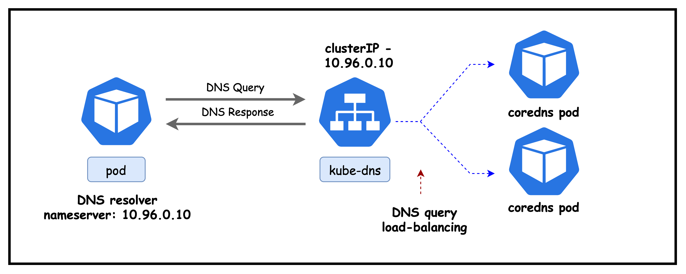
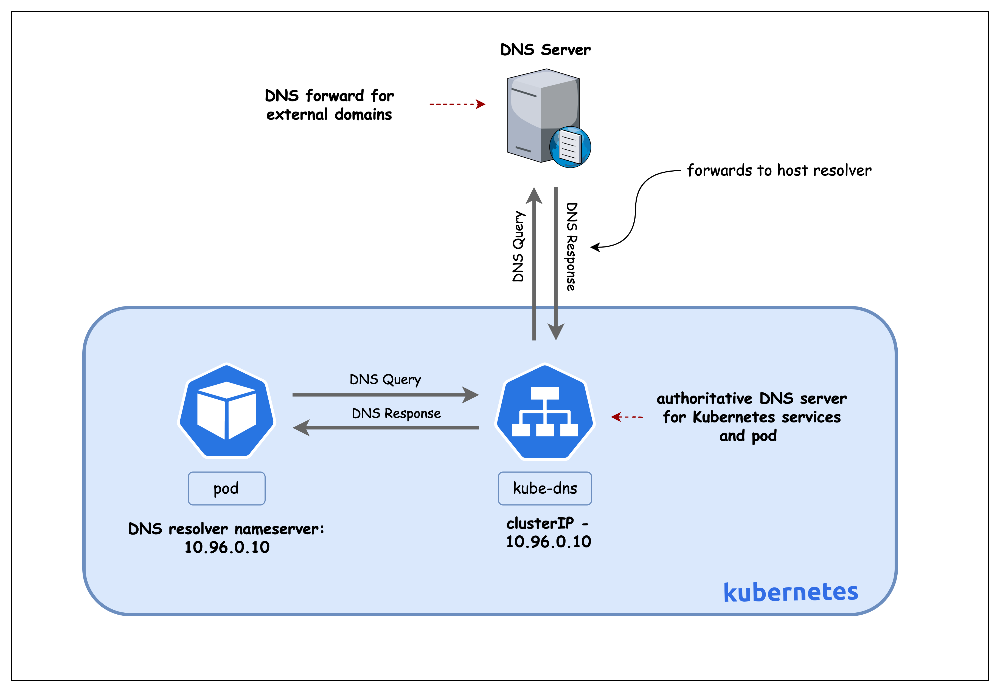

创建 Kind
containerlab deploy -t k8s-dns.clab.yaml
三节点、禁用默认 CNI。
Lesson 05 · CoreDNS · Service Discovery
沿着 Pod 的 resolv.conf、kube-dns ClusterIP、Corefile 与上游 resolver，还原一次查询的完整路径。
Service discovery without hard-coded IPs
重建 Service 或切换环境后，配置中的旧地址需要同步修改。
应用依赖名称，CoreDNS 返回当前 Service VIP。
应用通过 Service 名称定位稳定入口。
同一个短名称在不同 namespace 有不同含义。
非 cluster.local 查询转发到上游 DNS。
Resolver to answer
先确定查询名称如何展开，再判断 CoreDNS 是权威回答、缓存命中，还是转发到上游。
containerlab/05-k8s-dns
| 对象 | 课程值 | 作用 |
|---|---|---|
| Kind 节点 | 3 | control-plane + 2 workers |
| Pod CIDR | 192.168.0.0/16 | Calico IPPool |
| Service CIDR | 10.96.0.0/16 | 含 kube-dns ClusterIP |
| 集群域 | cluster.local | Service 与 Pod DNS zone |
| Calico | 3.30.0 | Pod 到 kube-dns/CoreDNS 可达 |
| 封装 | VXLANCrossSubnet | 跨 Node 子网时 VXLAN |
# k8s-dns-no-cni.yaml networking: disableDefaultCNI: true podSubnet: "192.168.0.0/16" serviceSubnet: "10.96.0.0/16" # custom-resources.yaml ipPools: - blockSize: 26 cidr: 192.168.0.0/16 encapsulation: VXLANCrossSubnet natOutgoing: Enabled
multitool-1 · multitool-2 · multitool-3
nginx-service 可以通过 default search suffix 展开。
foo 中要使用 nginx-service.default 或完整 FQDN。
deploy.sh
containerlab deploy -t k8s-dns.clab.yaml
三节点、禁用默认 CNI。
kubectl apply -f custom-resources.yaml
等待 TigeraStatus Available。
kubectl apply -f tools/*.yaml
两个 namespace 的客户端和 nginx。
仓库真实目录是 containerlab/05-k8s-dns，页面 kubeconfig 示例少了前导 0。
-l app=multitool 选不到 multitool-1/2/3 标签。使用 kubectl get pods -A -o wide。
ContainerLab and Kubernetes
k8s-dns-control-plane running 172.18.0.3 k8s-dns-worker running 172.18.0.4 k8s-dns-worker2 running 172.18.0.2
Node underlay 是 Pod 到 CoreDNS Endpoint 的基础。
$ export KUBECONFIG=$(pwd)/k8s-dns.kubeconfig $ kubectl get pods -A -o wide multitool-1/2 default Running multitool-3 foo Running nginx default Running coredns kube-system Running
测试 Pod、nginx 与 CoreDNS 都应 Ready。
kube-system/kube-dns
$ kubectl get service -n kube-system kube-dns
kube-dns ClusterIP 10.96.0.10
53/UDP · 53/TCP · 9153/TCP
大多数普通 DNS 查询。
显式 TCP、截断重试和部分大应答。
CoreDNS Prometheus metrics。
Service and Endpoints
192.168.206.6:53192.168.206.7:53Ready: .206.6Ready: .206.7NotReadyAddresses: none查询先经过 kube-dns Service 数据面，再由 kube-proxy 选择一个 CoreDNS Pod。
CoreDNS Pods behind kube-dns

课程仓库：images/corednspods.png
k8s-app=kube-dns
$ kubectl get pods -n kube-system -l k8s-app=kube-dns -o wide coredns-5dd5756b68-bnd2k 1/1 Running 192.168.206.6 k8s-dns-control-plane coredns-5dd5756b68-m65p4 1/1 Running 192.168.206.7 k8s-dns-control-plane
readiness endpoint 返回成功。
Service 后端地址与 Pod IP 对齐。
一个 CoreDNS 重启时仍有另一个后端。
kube-system/coredns ConfigMap
.:53 { errors health { lameduck 5s } ready kubernetes cluster.local in-addr.arpa ip6.arpa { pods insecure fallthrough in-addr.arpa ip6.arpa ttl 30 } prometheus :9153 forward . /etc/resolv.conf { max_concurrent 1000 } cache 30 loop reload loadbalance }
Authoritative for cluster.local
普通 Service 返回 ClusterIP。
返回被选中 Pod IP 集合。
命名端口返回服务名与端口。
匹配的反向记录由插件回答或 fallthrough。
为兼容 kube-dns，可按请求中的 IP 形式返回 Pod A 记录，不验证对应 Pod 一定存在。
kubernetes 插件回答记录的 TTL 为 30 秒。
Non-cluster names
query: www.example.com. kubernetes plugin no matching cluster.local zone forward plugin use CoreDNS Pod /etc/resolv.conf
上游来自 CoreDNS Pod 所见的 resolv.conf，不等于业务 Pod 的 10.96.0.10。
first query upstream response cache insert repeated query cache hit lower latency
缓存行为受应答 TTL、插件配置与记录类型影响。
Health, reload and protection
| 插件 | 职责 | 现场观察 |
|---|---|---|
| health | 8080 health endpoint，lameduck 让退出更平滑 | liveness |
| ready | 8181 readiness endpoint，等待插件就绪 | readiness |
| prometheus | 在 9153 暴露查询指标 | /metrics |
| reload | 周期计算 Corefile 校验和并优雅 reload | ConfigMap 更新后生效 |
| loop | 启动时检测简单静态转发环路 | 检测到环路会退出 |
| loadbalance | 随机化 A、AAAA、MX 应答记录顺序 | 不负责轮换上游 DNS |
课程口径修正：loadbalance 调整回答中的记录顺序；上游选择属于 forward 插件。
DNS resolver path

课程仓库：images/dnsresolver.png
docker exec k8s-dns-worker
# cat /etc/resolv.conf nameserver 172.18.0.1 search ec2.internal options edns0 trust-ad ndots:0
Kind Node 容器使用 Docker bridge 的 DNS 转发路径。
Node 短名称更快按绝对名称处理。
forward . /etc/resolv.conf 读取 CoreDNS Pod 内该文件。
default namespace Pod
$ kubectl exec -it multitool-1-8c8fb -- cat /etc/resolv.conf search default.svc.cluster.local svc.cluster.local cluster.local ec2.internal nameserver 10.96.0.10 options ndots:5
由 Pod 所在 namespace 决定。
kubelet 的 cluster-dns 指向 kube-dns Service IP。
ec2.internal 来自 Node/环境。
ClusterFirst is the normal default
| dnsPolicy | resolver 行为 | 典型场景 |
|---|---|---|
| ClusterFirst | cluster.local 交给集群 DNS，其他查询由 CoreDNS 转发 | 普通 Pod 默认 |
| Default | 继承 Node 的 DNS 配置 | 需要与 Node 相同解析路径 |
| ClusterFirstWithHostNet | hostNetwork Pod 仍使用集群 DNS | Node 级 agent |
| None | 完全使用 spec.dnsConfig | 自定义 nameserver/search/options |
排错先看 Pod spec：看到不同 resolv.conf 不一定是 kubelet 异常，可能是 dnsPolicy 或 dnsConfig 主动覆盖。
Resolver search expansion
nginx-service.default.svc.cluster.localnginx-service.svc.cluster.localnginx-service.cluster.localnginx-service.ec2.internalnginx-service.dig and libc resolver behave differently
dig nginx-serviceQUESTION:
nginx-service. IN A
SERVER: 10.96.0.10#53
status: SERVFAILdig 把 bare name 作为绝对名称查询，没有自动追加 Pod search suffix。
dig +search nginx-serviceQUESTION:
nginx-service.default.svc.cluster.local. IN A
ANSWER:
30 IN A 10.96.169.109+search 明确要求 dig 使用 resolv.conf 的 search list。
default namespace
dig +search nginx-servicenginx-service.default.svc.cluster.local.10.96.169.109第一 search suffix 正好是 default.svc.cluster.local。
普通 ClusterIP Service 不会直接返回 nginx Pod IP。
foo namespace
$ kubectl exec -it multitool-3-rbsdz -n foo -- cat /etc/resolv.conf search foo.svc.cluster.local svc.cluster.local cluster.local ec2.internal nameserver 10.96.0.10 options ndots:5
nginx-service 首先展开到 nginx-service.foo.svc.cluster.local。
所有普通 Pod 仍指向 10.96.0.10，变化的是 search list。
Short name stays inside current namespace
dig +search nginx-serviceService 在 default，不在 foo。Kubernetes 不会替短名称自动搜索所有 namespace。
service.namespace
dig +search nginx-service.defaultservice.namespace 足够让 search suffix 构造目标 FQDN。
service.namespace.svc.cluster.local. 带结尾点，直接按绝对名称查询。
Trailing dot bypasses search expansion
nginx-service.default.svc.cluster.local dots = 4 < ndots:5 resolver 仍可能先尝试 search suffix
nginx-service.default.svc.cluster.local. absolute FQDN 直接查询，不做 search expansion
对延迟敏感的外部域名或明确 FQDN，结尾点可以避免额外 search 查询。
forward . /etc/resolv.conf
非 cluster.local 名称仍先到 CoreDNS，再由 forward 转发。
如果上游最终又指回 CoreDNS，loop 插件可能让 CoreDNS 退出并进入 CrashLoopBackOff。
Transport behavior
普通查询通常先用 UDP，开销低，不需要建立连接。
dig nginx-service.default.svc.cluster.local. ;; SERVER: 10.96.0.10#53 ;; flags: qr rd ra
客户端可显式使用 TCP。UDP 应答带 TC 截断标志时，resolver 也可能重试 TCP。
dig +tcp nginx-service.default.svc.cluster.local. tcpdump -ni any port 53
Observe before changing Corefile
cat /etc/resolv.conf确认 nameserver、search、ndots 和 dnsPolicy。
dig +search +stats name观察问题名称、Server、status、TTL 与耗时。
kubectl logs -n kube-system -l k8s-app=kube-dns临时加 log 插件可记录每次查询。
curl :9153/metrics
tcpdump -ni any port 53区分没有收到、处理失败、转发超时。
Find the first broken stage
| 现象 | 优先检查 | 常见方向 | 命令 |
|---|---|---|---|
| Pod 没有 10.96.0.10 | dnsPolicy 与 kubelet cluster-dns | Default/None、resolv-conf 配置 | kubectl get pod -o yaml |
| 直接查 VIP 超时 | kube-dns Service 与 Endpoint | kube-proxy、CoreDNS NotReady、NetworkPolicy | kubectl get svc,ep -n kube-system |
| 集群名失败，外部名正常 | kubernetes plugin | Corefile、API watch、Service/namespace 拼写 | dig @10.96.0.10 nginx-service.default.svc.cluster.local. |
| 集群名正常，外部名失败 | forward 与上游 | Node resolver、环路、上游不可达 | cat /etc/resolv.conf |
| 短名称慢 | ndots 与 search | 多次 NXDOMAIN、外部名未带结尾点 | dig +search +stats nginx-service / tcpdump |
排错顺序：Pod 配置、kube-dns VIP、CoreDNS Endpoint、Corefile 插件、上游 resolver。
From infrastructure to namespace behavior
containerlab inspect -t k8s-dns.clab.yaml确认三节点 running。
kubectl get pods -A -o wide确认 CoreDNS 与测试 Pod。
kubectl get svc,endpoints -n kube-system kube-dns对齐 VIP 与 CoreDNS Endpoint。
kubectl get cm -n kube-system coredns -o yaml解释 Corefile。
cat /etc/resolv.conf对比 Node 与 Pod。
dig nginx-service展示 dig 默认不使用 search。
dig +search nginx-servicedefault namespace 成功。
kubectl exec -n foo <multitool-3> -- dig +search nginx-service从 foo 展示短名称失败。
kubectl exec -n foo <multitool-3> -- dig +search nginx-service.default带 namespace 成功。
dig +tcp www.example.com.演示外部转发与 TCP。
清理：运行 ./destroy.sh 并输入 yes，移除本实验 topology、Kind cluster 与 kubeconfig。
Summary and sources
kubelet 根据 dnsPolicy 注入 nameserver、search 与 ndots。
kubernetes 插件权威回答 cluster.local，cache 加速，forward 处理外部域名。
短名称局限当前 namespace，跨 namespace 要带 namespace 或完整 FQDN。